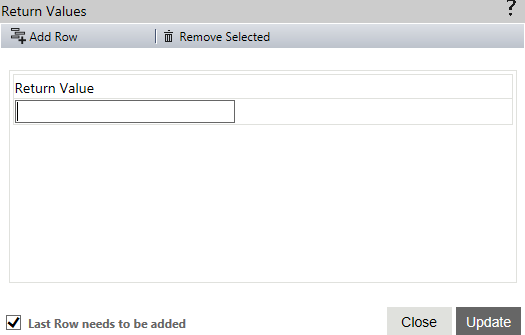

You can set the return values for the Shell in this property window. To open this window, click the button for the 'Return Values' property. It displays the values in a grid, which also has a blank row where you can enter a new return value.

Shell Return Values property
The window has two tabs at the top to manage the rows of return values in the grid.
Add Row - You can click this tab to add the newly entered return value and display a new row to the grid where you can add another value.
Remove Selected - You can click this tab to remove the return value selected in the grid.
The grid has the following parameters that you need to specify for the new return value.
Return Values - You can use this field to enter the return value.
There are two buttons and a check box at the bottom of the screen.
Update - You can click this button to save the newly added return value(s).
Close - You can click this to close the property window without saving the newly added return value(s).
Last Row needs to be added - You need to check this check box to save the last row added.